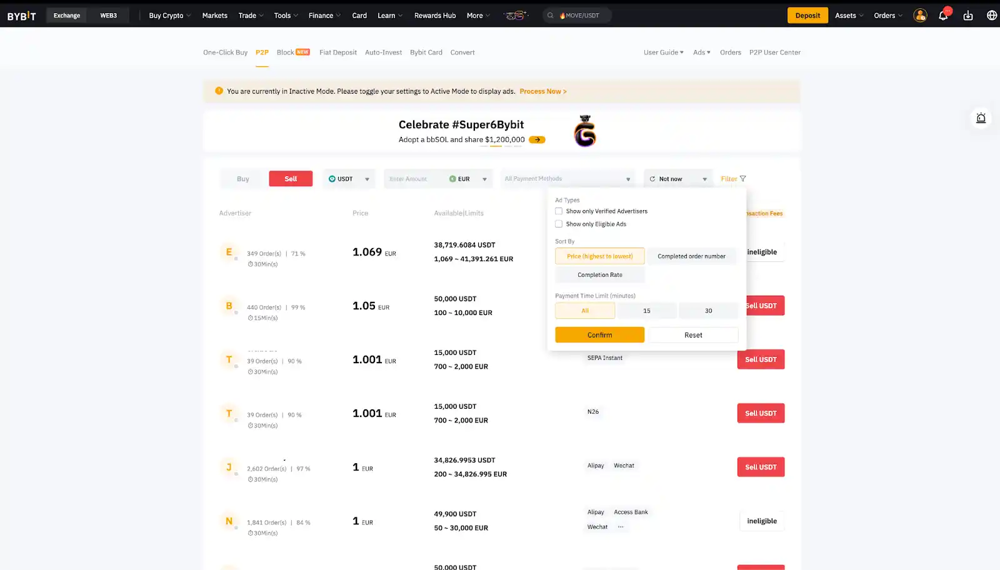

Stablecoin Arbitrage: Mastering Market Inefficiencies on Bybit P2P

Figure 1: Real-time Bybit P2P interface showing active spreads and liquidity providers.
Operational Brief
- Bybit Advantage: Lower institutional friction and wider spreads compared to Binance during peak volatility hours.
- USDT Dynamics: Leveraging the "Safe Haven" demand for USDT when local currencies experience rapid devaluation.
- Risk Management: Strategies to mitigate counterparty risk and payment verification delays in high-frequency P2P trading.
In the high-stakes environment of 2026, stablecoin arbitrage has evolved from a simple hobby into a sophisticated financial operation requiring precision and strategic platform selection. While Binance remains the largest marketplace by volume, seasoned arbitrageurs are increasingly pivoting toward Bybit's P2P infrastructure to exploit superior price inefficiencies that larger, more saturated exchanges often iron out too quickly. This shift is primarily driven by Bybit's growing liquidity in emerging markets and its relatively more flexible verification protocols, which allow professional traders to move capital with greater agility when market conditions in the Gulf or Latin America begin to show signs of extreme currency stress.
Effective arbitrage on the Bybit platform relies on the fundamental principle of capturing the "spread"—the percentage difference between the buying price of USDT and the subsequent selling price in a different fiat pair or payment method. During periods of geopolitical uncertainty, such as the current tensions in the Strait of Hormuz, local demand for digital dollars spikes almost instantaneously, causing the P2P buy-price to decouple from the official global spot rate. By maintaining a liquid position in multiple payment processors, an arbitrageur can purchase USDT at a lower rate from sellers needing immediate cash and sell it at a significant premium to those seeking to protect their wealth from sudden devaluation.
Success in this field requires more than just capital; it necessitates an intimate understanding of Bybit's merchant ranking algorithms and the psychological behavior of P2P participants during "panic" cycles. Unlike automated spot trading, P2P arbitrage is a human-centric endeavor where reputation, speed of release, and reliability are the primary currencies that allow a trader to command a premium over the competition. Professional operators on Bybit often utilize specialized sub-accounts to segregate their capital, ensuring that a single dispute or payment delay does not paralyze their entire operating budget, thereby maintaining a constant flow of transactions and compounding profits through high-velocity daily cycles.
Looking forward, as the regulatory landscape for digital assets becomes more stringent, the ability to operate within high-compliance yet flexible environments like Bybit will become the hallmark of the successful arbitrageur. The integration of advanced calculators—such as the one featured on our portal's main dashboard—allows for the rapid assessment of ROI before committing capital, accounting for platform fees and potential slippage. In a world where financial borders are becoming increasingly complex, mastering the art of the stablecoin "bridge" on Bybit offers a unique path to profitability that remains largely disconnected from the traditional volatility of the broader stock and bond markets.